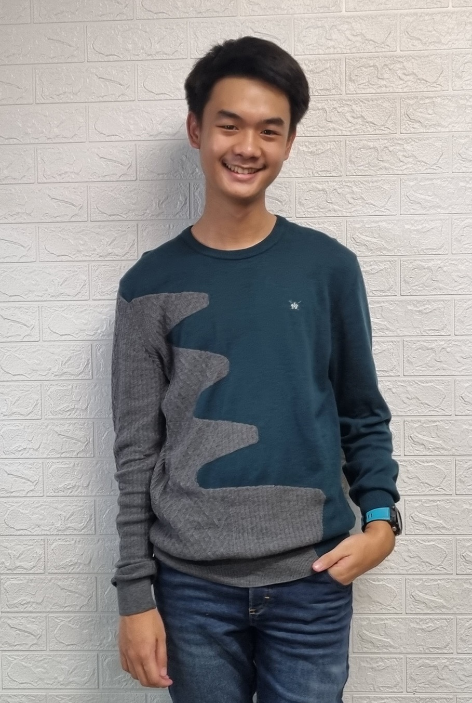
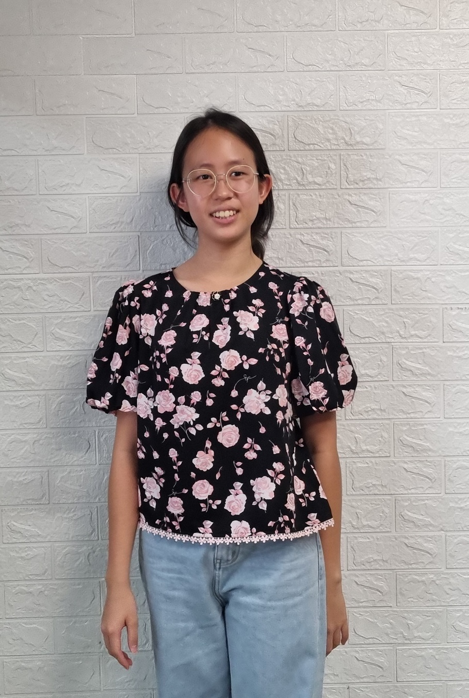
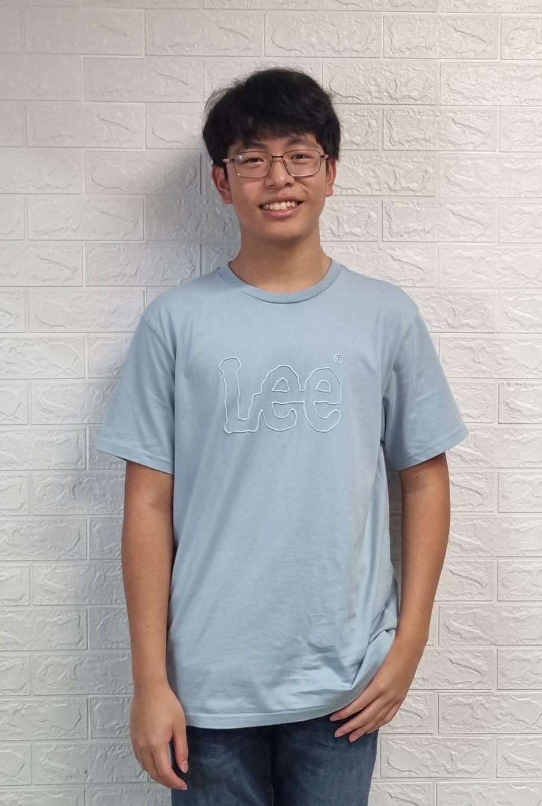
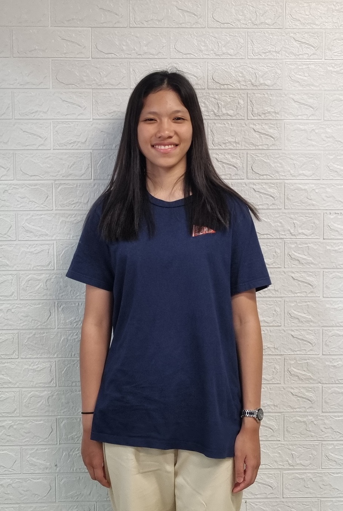
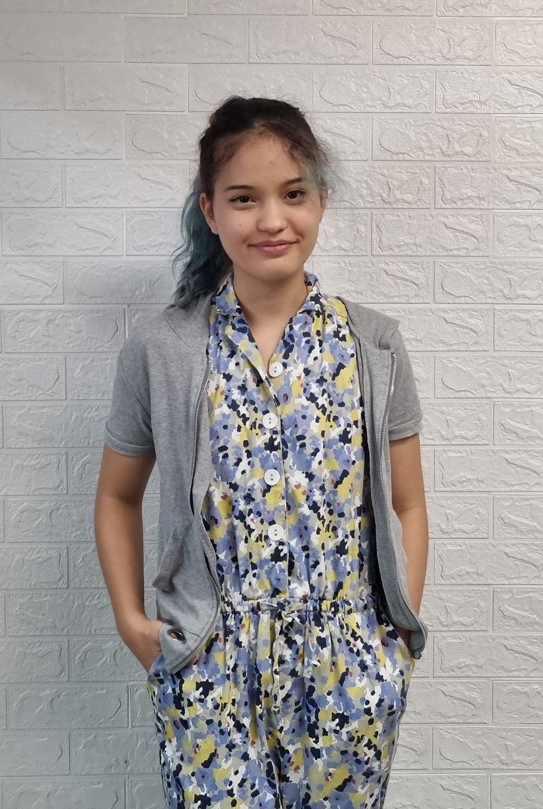
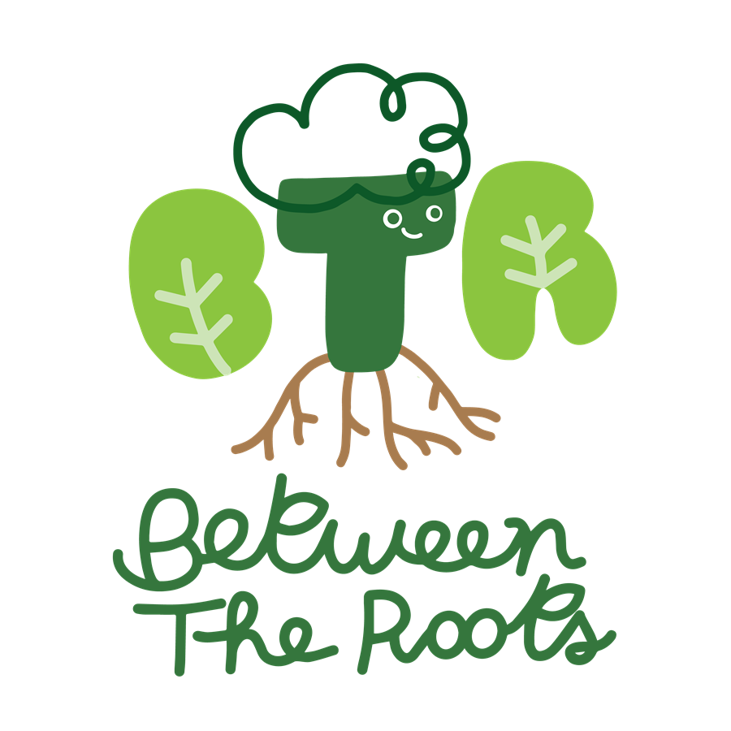

Our Team

The Founder
Thanakorn (Gunn) Vajirakachorn
BTR has gone from a fifth grade personal project to a community of like-minded individuals working together to advocate for sustainability. I am so honored to have been able to build this community and use environmental innovations to spark change in society.
RIS Executive Team
-

Thanakorn (Gunn) Vajirakachorn
-

Thamonnut (Muay) Ampornkotchakorn
-

Thanawin (Win) Ampornkotchakorn
KIS Executive Team
-

Nannapat (Prim) Intharasema
-

Tanaree (Tara) Gittelson
-

Sathin Gupta